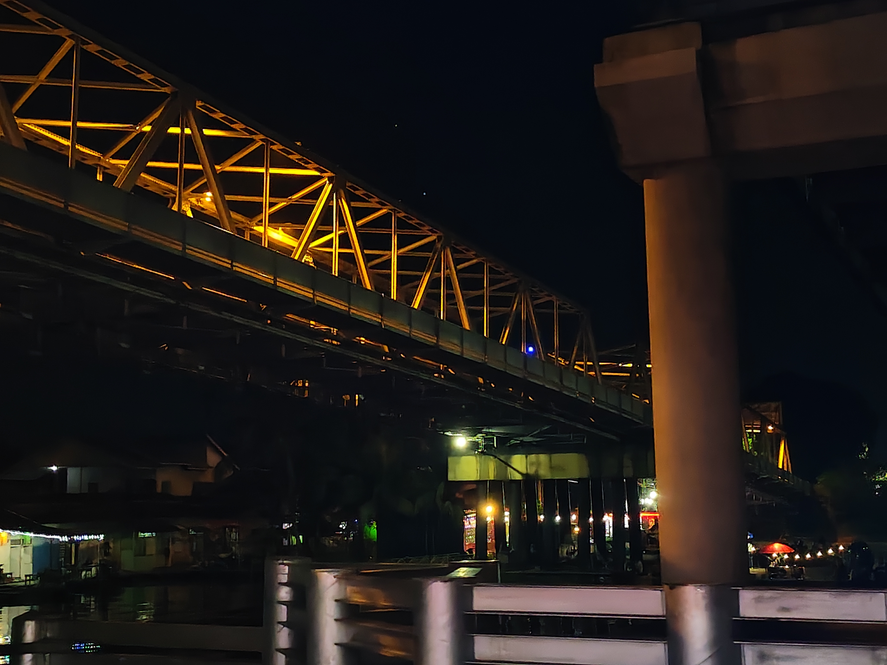
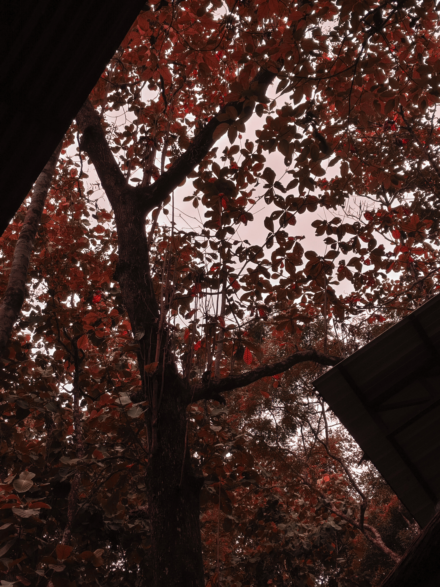

> THE_CONCEPT
Just me wandering around concrete jungles capturing raw, unfiltered moments of urban decay and human exhaustion. Taking mundane, depressing city routines and framing them into visual stories because why not.
> VISUAL_APPROACH
Heavy obsession with asymmetrical compositions, unnaturally harsh shadows, and moody cinematic color grading. No over-edited slop, no fake filters, just raw, minimalist, and aggressively edgy visuals that match my current sleep-deprived state.
[ HIGH RESOLUTION RAW CAPTURES ]
OPTICAL_FRAMES // GALLERY
FRAME // 01
ISO 400 // 50MM

FRAME // 02
ISO 800 // 50MM

FRAME // 03
ISO 1600 // 50MM

FRAME // 04
ISO 3200 // 50MM